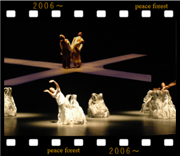

― ピースフォレストの目的 ―
私たちは国際文化交流や青少年健全 育成を主目的とした団体です。
2006年に設立し、米国をはじめ 西欧・東欧・南米・アジアなどの国々の 人々との音楽・舞踏や講演等のイベント を通し、各国との文化交流や国際親善を 深める活動と支援を行ってきました。また、未来をになう子供達を広く豊か な心に育てようと国際交流を通して インターナショナルな活動を行っています。
私たちは国際文化交流や青少年健全 育成を主目的とした団体です。
2006年に設立し、米国をはじめ 西欧・東欧・南米・アジアなどの国々の 人々との音楽・舞踏や講演等のイベント を通し、各国との文化交流や国際親善を 深める活動と支援を行ってきました。また、未来をになう子供達を広く豊か な心に育てようと国際交流を通して インターナショナルな活動を行っています。
― Peace Forest ―
Peace Forest mainly organizes lectures or concerts by Japanese people and people from various countries. Through exchanges of cultures and music with foreigners living in Japan, we are promoting the message of peace. Our activities may be humble and small, Just like the seedlings sprout in the desert, which eventually become a forest to enrich spirits of people..
Peace Forest mainly organizes lectures or concerts by Japanese people and people from various countries. Through exchanges of cultures and music with foreigners living in Japan, we are promoting the message of peace. Our activities may be humble and small, Just like the seedlings sprout in the desert, which eventually become a forest to enrich spirits of people..
